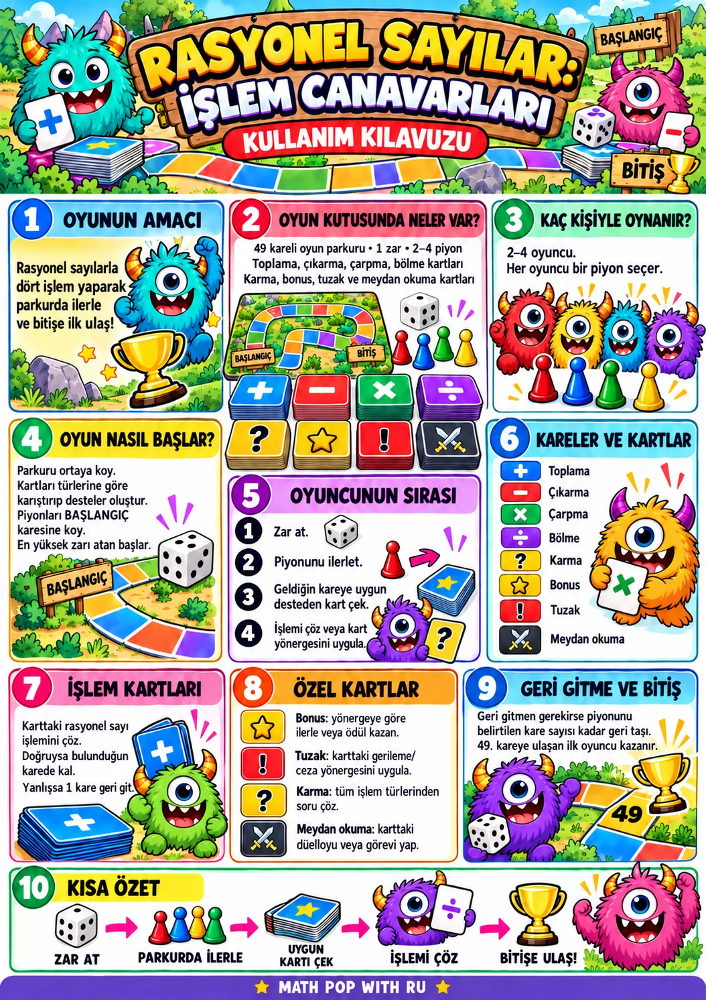

- Oyuncu sayısını seçin. 2–4 kişi kendi canavar piyonunu belirlesin.
- Sırayla zar atın. Piyonunuzu gelen sayı kadar ilerletin.
- Kareye göre kart çekin. Dört işlem veya özel kartın yönergesini uygulayın.
- İşlemi çözün. Cevabı sadeleştirilmiş kesir olarak girin. Denk kesirler kabul edilir.
- Doğru cevap: 1 puan kazandırır. Meydan okumada doğru cevap 2 kare ilerletir.
- Yanlış cevap: 1 kare geri gidin. Özel kartların etkileri kartta gösterilir.
- İlk bitişe ulaşan kazanır. Bir zar atışı 49. kareyi geçerse bitiş karesinde durun.
Bu dijital sürümde bonus, tuzak ve meydan okuma etkileri otomatik uygulanır. “Karma” karesi dört işlem türünden rastgele bir soru getirir.